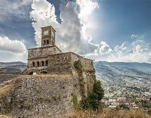

Κάστρο Gjirokastër - Κάντε κλικ στην εικόνα για να μάθετε περισσότερα!

Παλιό παζάρι του Gjirokastër - Κάντε κλικ στην εικόνα για να μάθετε περισσότερα!

Εθνογραφικό Μουσείο Gjirokastër - Κάντε κλικ στην εικόνα για να μάθετε περισσότερα!